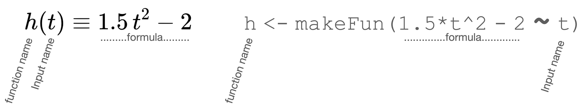

3 Computing with R
3.1 Commands and evaluation
Mathematical notation evolved for the purpose of communication among people. With the introduction of programmable computers in the middle of the 20th century, a notation was needed to communicate between people and hardware. It turns out that traditional mathematical notation in calculus is not fully adequate for this purpose.
Computers need to distinguish between declarative and imperative statements. A declarative statement, like \(g(z) \equiv z \cos(z)\) defines and describes a relationship. An imperative statement is a direction to do some action. For instance, “The store is on the next block,” is declarative. “Bring some crackers from the store,” is imperative.
The names and format of such instructions—e.g. make a mathematical function from a formula, draw a graph of a function, plot data—are given in the same function notation we use in math. For example, makeFun() constructs a function from a formula, slice_plot() graphs a function, gf_point() makes one style of data graphic. These R entities saying “do this” are also called “functions.”
When referring to such R “do this” functions, we will refer to the stuff that goes in between the parentheses as “arguments.” The word “input” would also be fine. The point of using “input” for math functions and “argument” for R “do-this” functions is merely to help you identify when we are talking about mathematics and when we are talking about computing.
With computers, writing an expression in computer notation goes hand-in-hand with evaluating the notation. We will start with the simplest mode of evaluation, where you are writing the expression in the console for the language. Figure fig-R-console shows and example the console tab provided by the RStudio application.

> is the prompt after which you write your expression, here shown in \(\color{blue}{\text{blue}}\). Pressing the “return” key causes the language interpreter to evaluate the command.In Figure fig-r-console we have come in to the story in the middle of the action. To start, there was just a prompt character.
\(\color{blue}{\mathtt >}\)
The person at the keyboard then typed a simple expression: 2 + 3
\(\color{blue}{\mathtt >\ 2 + 3}\)
Having completed the expression, the keyboarder presses “return.” The RStudio application sends the expression to the software that “interprets” it according to the rules of the R language. 2 + 3 is a complete, valid R expression, an imperative statement. Consequently, the R-language software carries out the action specified—adding 2 and 3—and returns the result to RStudio, which displays it just below the expression itself.
\(\color{blue}{\mathtt >\ 2 + 3}\)
\(\mathtt{[1]\ 5}\)
Note that the value of the expression is simply the number 5. The R language is set up to format numbers with an index, which is helpful when the value of the expressions is a large set of numbers. In the case here, with just a single number in the result of evaluating the expression, the index is simply stating the obvious.
Having printed the result of evaluating the 2 + 3 expression, RStudio shows another prompt, signally that it is ready for you to enter your next expression. In Figure fig-r-console we are seeing the console after the person at the keyboard has responded to the prompt by writing another expression, pressed return, had RStudio print the value of that expression, and displayed a new prompt.
The two expressions shown in the console in Figure fig-r-console both evaluate to single numbers. We say, “the command returns a value.” The command is a valid R expression followed by the signal (pressing the “Return” key) to evaluate the command. The value of the expression is the result of evaluating the command.
In a mathematical statement like \(h(x) \equiv 3 x + 2\), the \(\equiv\) indicates that the statement is declarative. On the other hand, applying a function to a value, as in \(h(3)\), is an imperative statement.
Another common form of R expression is assignment, a declarative statement. An assignment gives a name to a value. It is done using a symbolic name and the <- token:
b <- 3The result of evaluating this command is to store in the computer memory, under the name b, Because the value is being stored, R is designed not to display the value as happened with the first two commands in the console. If you want to see the value printed out, give the name as an imperative command:
b
## [1] 3Often, declarative and imperative statements are combined, for instance
b <- 22/7This book displays the command being evaluated in a gray box, without a prompt. The value returned by the command is displayed underneath the command, prefaced by \(\color{red}{\mathtt{\#\#}}\). In the book formatting, the four commands we have just described would be displayed in this way:
2 + 3
## [1] 5
sqrt(16)
## [1] 4
b <- 3
b <- 22/7
b
## [1] 3.142857When reading this book, take care to distinguish between the display of a command and the display of the value returned by that command. The first is something you type, the second is printed by the computer.
3.2 Installing mosaic
This book uses the R language extended by a series of packages known collectively as {mosaic}. To use the commands in the next sections, you will need to install these package. This is a one-time operation; you do it once for each computer after you have set up R and RStudio. These commands will do the job. Run them into your R console.
install.packages("remotes")
remotes::install_github("ProjectMOSAIC/mosaicCalc")You do not need to reinstall the packages every time you start up a new R console. However, you must tell each R console that you open to refer to the packages. Do this with the following command, which will typically be the first thing you type when you open a console.
library(mosaicCalc)3.3 Functions in R/mosaic
One of the fundamental mathematical operations in this book is defining functions. You’ve already seen the way we use mathematical notation to define a function, for instance,
\[h(t) \equiv 1.5\, t^2 - 2\ .\]
The R/mosaic equivalent to the definition of \(h()\) is:
h <- makeFun(1.5*t^2 - 2 ~ t)Once you have defined a function, you can evaluate it on an input. The R notation for evaluating functions is the same as with mathematical notation, for instance,
h(4)
## [1] 22or
h(t=4)
## [1] 22There are obvious differences, however, between the mathematical and computing notation used to define a function. All the same information is being provided, but the format is different. That information is:
- the name of the function: \(h()\) or
h. When writing the name of a computer-defined function, we will put the reminder parentheses after the name, as inh(). - the name of the input to the function: \(x\) or
x - the calculation that the function performs, written in terms of the input name. \(1.5 t^2 -2\) or
1.5 * t^2 - 2.
Laying out the two notation forms side by side let’s us label the elements they share:

For the human reading the mathematical notation, you know that the statement defines a function because you have been told so. Likewise, the computer needs to be told what to do with the provided information. That is the point of makeFun(). There are other R/mosaic commands that could take the same information and do something else with it, for example create a graph of the function or (for those who have had some calculus) create the derivative or the anti-derivative of the function.
In R, things like makeFun() are called “functions” because, like mathematical functions, they turn inputs into outputs. In the case of makeFun(), the input is a form called a tilde expression, owing to the character tilde (~) in the middle. On the right-hand side of the tilde goes the name of the input. On the left-hand side is the R expression for the formula to be used, written as always in terms of the input name. The whole tilde expression is taken as the one argument to makeFun(). Although it may seem odd to have punctuation in the middle of an argument, remember that something similar happens when we write \(h(t=3)\).
3.4 Names and assignment
The command
h <- makeFun(1.5*t^2 - 2 ~ t)gives the name h to the function created by makeFun(). Good choice of names makes your commands much easier for the human reader.
The R language puts some restrictions on the names that are allowed. Keep these in mind as you create R names in your future work:
- A name is the only1 thing allowed on the left side of the assignment symbol
<-. - A name must begin with a letter of the alphabet, e.g.
able,Baker, and so on. - Numerals can be used after the initial letter, as in
final4org20. You can also use the period.and underscore_as inthird_place. No other characters can be used in names: no minus sign, no@sign, no/or+, no quotation marks, and so on.
For instance, while third_place is a perfectly legitimate name in R, the following are not: 3rd_place, third-place. But it is OK to have names like place_3rd or place3, etc., which start with a letter.
R also distinguishes between letter case. For example, Henry is a different name than henry, even though they look the same to a human reader.
3.5 Formulas in R
The constraint of the keyboard means that computer formulas are written in a slightly different way than the traditional mathematical notation. This is most evident when writing multiplication and exponentiation. Multiplication must always be indicated with the * symbol, for instance \(3 \pi\) is written 3*pi. For exponentiation, instead of using superscripts like \(2^3\) you use the “caret” character, as in 2^3. The best way to learn to implement mathematical formulas in a computer language is to read examples and practice writing them.
Here are some examples:
| Traditional notation | R notation |
|---|---|
| \(3 + 2\) | 3 + 2 |
| \(3 \div 2\) | 3 / 2 |
| \(6 \times 4\) | 6 * 4 |
| \(\sqrt{\strut4}\) | sqrt(4) |
| \(\ln 5\) | log(5) |
| \(2 \pi\) | 2 * pi |
| \(\frac{1}{2} 17\) | (1 / 2) * 17 |
| \(17 - 5 \div 2\) | 17 - 5 / 2 |
| \(\frac{17 - 5}{\strut 2}\) | (17 - 5) / 2 |
| \(3^2\) | 3^2 |
| \(e^{-2}\) | exp(-2) |
Each of these examples has been written using numbers as inputs to the mathematical operations. The syntax will be the same when using an input name such as x or y or altitude, for instance (x - y) / 2. In order for that command using x and y to work, some meaning must have been previously attached to the symbols. We will come back to this important topic on another day.
3.6 Drill
Drill 1 Is xx a legitimate name in R?
True False
Drill 2 Is -x a legitimate name in R?
True False
Drill 3 Is 3x a legitimate name in R?
True False
Drill 4 Is x3 a legitimate name in R?
True False
Drill 5 Is sqrt a legitimate name in R?
True False
Drill 6 Is x + y a legitimate name in R?
True False
Drill 7 Is 3 * x a legitimate name in R?
True False
Drill 8 Is xprime a legitimate name in R?
True False
Drill 9 Is x prime a legitimate name in R?
True False
Drill 10 Is dx a legitimate name in R?
True False
Drill 11 Is dx_f a legitimate name in R?
True False
Drill 12 What’s wrong with this assignment statement? x < 4
- Nothing
- it is missing part of the
<-token. xis an improper name.
Drill 13 What’s wrong with this assignment statement? 3*x <- 4
- Nothing
- It should use addition instead of multiplication.
- The item to the left of
<-needs to be a name - There is no
xon the right-hand side of the assignment arrow.
Drill 14 What’s wrong with this assignment statement? x -> 3+4
- Nothing
- You cannot use addition in an assignment statement.
- The assignment has to point toward the name, not the value
Drill 15 We can write something like \[f(x) \equiv x^2\] in mathematical notation. Is it legit in R to write f(x) <- x^2 ?
- Yes, it is fine.
f(x)is not a valid name in R.- Almost. You need to use () instead of
<-.
Drill 16 Which of these is the right way to translate \(e^x\) into R?
e^xexp(x)e(x)- There is no R equivalent.
Drill 17 If x has been assigned the value pi/2, what will be the value of the R expression 2 sin(x)?
- 0, since \(\sin(\pi/2) = 0\).
- 1, since \(\sin(\pi/2) = 1\).
- 2, since \(\sin(\pi/2) = 1\).
- No value. The expression is in error.
Drill 18 What’s wrong with the R command
f <- 3*x + 2
for defining a function?
- It needs to be
f(x) <- 3*x + 2 - It needs to be
f <- makeFun(3*x + 2) - It needs to be
f <- makeFun(3*x + 2 ~ x). - Nothing is wrong
Drill 19 What’s wrong with this R command for creating an exponential function named g?
g <- makeFun(e^y ~ y)
- Nothing
- It uses
yas the argument instead ofx. e^yis not the exponential function- Better to name the argument
x
Drill 20 What’s suspect about this R command?
g <- makeFun(exp(y) ~ x)
- The formula is
exp(y)but the argument name isx - There is a tilde expression as the argument to
makeFun(). - The function name should be
G, notg. - Nothing
Drill 21 What’s wrong with the R expression sin*(x + 3)?
- There is no function named
sin*() - It should be
sin+(x+3) - It should be
sin^(x+3) - Nothing
Drill 22 What does e^3 mean in R?
- It corresponds to \(e^3\), which happens to be 20.09
- A shorthand for
eee. - The value stored under the name
ewill be raised to the third power.
Drill 23 What’s missing in the R expression (x+3)(x+1)?
- Nothing
- There is an extra closing parenthesis.
- There is a missing closing parenthesis.
- The multiplication symbol,
*, is missing.
Drill 24 Which of these phrases is most appropriate for describing what the R command z <- sin(17) is doing?
- Gives a name to a value.
- Applies a function to an input to produce an output.
- Makes a copy of an existing object.
- The name of an object.
- it is invalid as a command.
Drill 25 Which of these phrases is most appropriate for describing what the R command sin(17) is doing?
- Gives a name to a value.
- Applies a function to an input to produce an output.
- Makes a copy of an existing object.
- The name of an object.
- it is invalid as a command.
Drill 26 Which of these phrases is most appropriate for describing what the R command z <- x is doing?
- Gives a name to a value.
- Applies a function to an input to produce an output.
- Makes a copy of an existing object.
- The name of an object.
- it is invalid as a command.
Drill 27 Which of these phrases is most appropriate for describing what the R command fred is doing?
- Gives a name to a value.
- Applies a function to an input to produce an output.
- Makes a copy of an existing object.
- The name of an object.
- it is invalid as a command.
Drill 28 In the statement pnorm(3, mean=4, sd=6 ), what is pnorm?
- The name of the function being applied to the three arguments.
- A named argument
- An argument to be used without a name.
Drill 29 In the statement pnorm(3, mean=4, sd=6 ), what is mean=4?
- The name of the function being applied to the three arguments.
- A named argument
- An argument to be used without a name.
Drill 30 In the statement pnorm(3, mean=4, sd=6 ), what is 3?
- The name of the function being applied to the three arguments.
- A named argument
- An argument to be used without a name.
Drill 31 Will the statement pnorm(x=3, mean=4, sd=6) give the same result as pnorm(3, mean=4, sd=6) ?
- Yes, same arguments to the same function means the output will be the same.
- No. The name of the first argument to
pnorm()is notx.
Drill 32 Will the statement pnorm(3, mean=4, sd=6) give the same result as pnorm(3, sd=6, mean=4)?
- Yes.
- No. The arguments are different.
Drill 33 Will the statement pnorm(3, mean=4, sd=6) give the same result as pnorm(3, sd=4, mean=6)?
Yes No
Drill 34 What is the value of 16^1/2?
4 8
Drill 35 What is the value of 16^(1/2)?
4 8
Drill 36 Suppose n <- 3. What will be the value of 2^n-1?
4 7 8
Drill 37 Suppose n <- 3. What will be the value of 2^(n-1)?
4 7 8
Drill 38 In g <- makeFun(3*z + 2 ~ z), which is the name of the input to the function g()?
\(x\) \(y\) \(z\) \(t\)
Drill 39 Will this statement work in R? sin(4)
Yes No
Drill 40 Will this statement work in R? Sin(4)
Yes No
Drill 41 Will this statement work in R to calculate \(\sin(4)\)? sin[4]
Yes No
3.7 Exercises
Problem with NA NA
Note for R experts: Strictly speaking, the thing to the left of
<-must be an “assignable,” which includes names with indices (e.g.Engines$hporEngines$hp[3:5]and other forms). We will not need indexing in MOSAIC Calculus↩︎